Software Development

From the first day of the semester forward we expect students (you) to visit this page once per 24 hours.
 Thursday, December 10th, 2020 9:22:34am
Thursday, December 10th, 2020 9:22:34am
The results for Milestone 10 are out. The scores range from 20 to 90 out of 120 base points. Keep in mind that we drop one homework score to maximize your average.
The more important part is what the scenario explanations mean. Less than half the test scenarios focus on tournaments with normal players. To start, when your clients connected to our server, they got 10s per call (more than 3x what was announced). They could not rely on the server running first. Most of our clients were broken and to be kicked. Their faults ranged from sending no name, a no-JSON name, ill-formed JSON, to invalid JSON; some also took a very long time to respond. As announced, the goal was to make sure your Remote/ code was robust and could withstand the most basic connection and I/O problems.
The final code walk does not depend on the correctness of the client-server. It is much more important that you can explain, and reason about, your design decisions with the two panelists.

Monday, December 7th, 2020 6:41:59am
Voting The vote server is up. The revised vote announcement below includes a link to submission script. It runs at the command line on CCIS Linux and OS X as well as in DrRacket on Windows. The server will go down at 7:00pm.
Milestone 10 Modify your client to use exploration depth 1. Push this one-line fix by 7:00pm.
Lab Book Send your lab books to Ben Greenman. Use the following subject line: cs4500 lab book The deadline is also 7:00pm.
Final Code Walk Remember that as of 10:30am you can sign up for Final Code Walks.

Sunday, December 6th, 2020 9:10:24am
|
|
Vote is a JSON array of four distinct natural numbers between 0 |
and 100, in monotonically decreasing order. The four numbers |
correspond to ok+, ok, ok-, and zero, respectively. |
We will take down the server around 7pm the same day.
Fraud If we notice any attempt at fraud, vote harvesting, attack on the server, or discussions of the vote on-line (Piazza), we will void the election result. In this case, the instructors will assign four numbers to these grades.
Rationale As I explained in my section, voting serves two purposes. First, the evaluation of a presenter or a panelist is somewhat subjective even though we actually state and re-state our rubric during every post-mortem discussion of code walks. So we remedy this problem by giving students a voice. Second, it gives us, the instructors, a chance to meta-evaluate your skills of evaluating the performance of developers as presenters and panelists. Many of you will soon be in a position where you have to evaluate other developers, and you might as well reflect on this situation now.
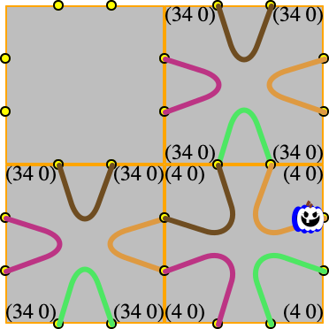
Sunday, December 6th, 2020 7:13:16pm
Final Code Walks explains how to sign up for the final code walk as of tomorow, Monday 7 Dec 2020, 10:30am.

Wednesday, December 2nd, 2020 6:40:28pm
I have relaxed the implementatin for your server’s variant of take-turn. Implementing this via an adapater would might be too much work depending on your state representation. Thank you Julia for pointing this out.
Also, I have pushed a fuller explanation of the redundancy in the take-turn method call. See Remote Interactions.
Note My stress tests for the referee and tournament manager suggest that the imperative solution can be about 10-20% faster than the functional in plain cases. I therefore stopped using the imperative one, though my unit tests and contracts rigorously test that the two arguments are in sync.

Wednesday, December 2nd, 2020 6:05:15pm
The deadline for 10 —

Monday, November 30th, 2020 10:41:33am
If you submitted a solution for 9 —
Before you connect to your scheduled zoom session, log into a Linux server.

Saturday, November 21st, 2020 2:50:27pm
The actual test fest for 6 —
Download the collected legal tests and work through your failures.

Wednesday, November 18th, 2020 1:15:54pm
The results for the code inspection of 7 —

Wednesday, November 18th, 2020 8:16:51am
Your main contractor has developed integration tests based on the specifications while you, the sub-contractor, worked on the code. Download to make sure the two parties agree on the most basic points of the software.
For the test fest, we will use 60s as the limit per game run.

Tuesday, November 17th, 2020 3:48:23pm
What’s the maximum number of players per game? | 4 |
How do you allocate games then? | 4, 4, 4, ..., 4. |
Until? | You drop below 4. |
How many possibilities are there? | 3, 2, 1, and 0. |
Does 0 matter? | No. |
Can you play a game with 3 players? | Yes. |
Can you play a game with 2 players? | Yes. |
Can you play a game with 1 player? | No. |
What do yo have to do? | Backtrack. |
What does this mean for max number of players? | Set it to 3. |
What else do you have to do? | Start from the last "candidate game". |
Does that mean we have 5 players to allocate? | Yes. |
What’s the max number again? | 3. |
How many are left after allocating 3? | 2. |
Can 2 players play a game? | Yes. |
Are we done? | Well, what if you change your mind? |
What do they say in F 1 about abstraction? | Do it when you have more than one example. |
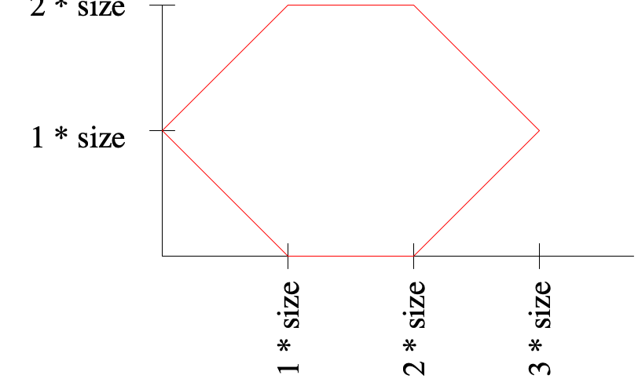
Friday, November 13th, 2020 9:12:09am
20 points out of 320? Really?
Q: Why did your software architect deduct 20 out of 320 base points from your latest "salary" for not using the game tree for rule enforcement?
A: Because he asked you to do so in 3 —
Q: Sure but why would we use a tree? Isn’t a rule book module more efficient?
A: Don’t forget the context of these calls. The referee will make function calls to the players via the network. That’s a far greater cost than any local call.
We could probably run a million linear-time checks for branching factors of 10 or 40 and the network traffic would still dominate.
Q: Okay, so a tree is less efficient than a rule book?
A: No. If efficiency refers to bigO time, a tree representation can use a hash map for the branches. The domain check is the legality check and basically constant.
But don’t forget the context.
Q: Fine but isn’t it true that a rule book makes for much more readable referee code? All my developer friends say so!
(take-turn current-tree proposed-action)
(take-turn current-state proposed-action)
Rule Book Module
So in essence the referee is the same modulo the identifier tree vs state. Your software architect considers these two options equally readable. A name refactoring could make them even identical.
Q: Even if the referee modules are kind of the same, isn’t it so much simpler to construct the rule book module than the tree module?
A: If, and that’s if, you were working on Common/ and referee only, you could consider a tree "overkill". But again, remember the context.
We are implementing players for two reasons. First, we must test the logic of the entire system before we construct a communication layer. Second, our resident AI expert has called for the exploration of a classic AI strategy, the minimax optimization on the tree. So we have to design and implement the tree anyways; we might as well use it for action checking,
Q: Is it really worth 20 out of 320 points?
A: You’re right. For violating an explicit specification, your manager/architect should probably have deducted 40 points, not just 20. But 20 it is, and 20 it stays.

Friday, November 13th, 2020 5:53:27pm
The specifications of 8 —
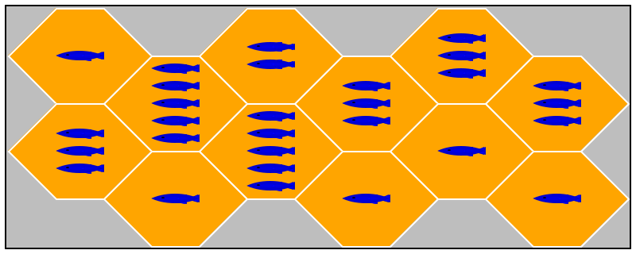
Friday, November 13th, 2020 9:25:31am
Send your lab books to Ben Greenman.
cs4500 lab book |
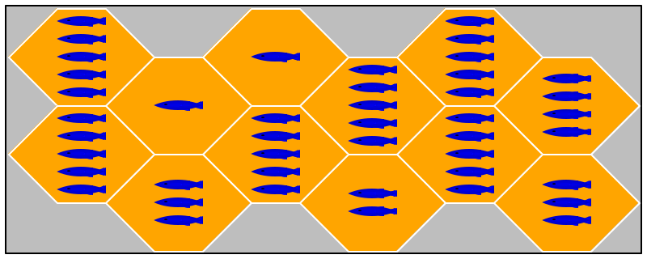
Wednesday, November 11th, 2020 10:30:36am
Why Game Trees
I have spelled out the rationale below in my section several times, but code walks in all sections suggest, it is best to write this rational down once and for all.
Step 1: Rule Books Board games come with rule books, which are written in English. Everyone who has played a board game knows that different people interpret such rules in different ways, and people end up discussing interpretations during a game.
This kind of misinterpretation represents billions and trillions of dollars in the complex financial contracts that have been developed over the last three or four decades. See my thoughts on the SEC’s idea on Python for asset-backed securities.
Since Fish will ask people to pay money to participate in "hey that’s my fish" tournaments, we must publish the rules of the game. We could use English. And we would get sued about different interpretations, and it would then be likely that we will end up getting fined. Some jury somewhere will side with the participant.
In class I say Common/ represents the common ontology. As software developers, we have an obvious alternative to English: code. Instead of publishing the rules of the game in English only, we publish the code in Common/ and tell potential participants that "code rules." All they have to do is download it, read, and run the code. In case of a conflict we can point any jury to this code.
This strategy is effective only if the unpublished referee uses this rule book. If the referee re-implements the rule checking, any articulate expert will convince any jury that there is a conflict between the rule book and the referee’s re-implementation.
Step 2: Game Trees Using the game tree to represent the rule book is This choice roughly corresponds to the European idea of law as rules that govern all known and future situations in a uniform manner. overkill. In an ordinary situation, it would suffice to implement the following components: rule-book on top of game-state, knowledge-about-player, board, and tile.
a rule-book milestone, to be published in the Common/ folder
a game-tree milestone, to be hidden in Player/.
But, a secondary requirement for any solid course on software development is the inclusion of one challenging milestone concerning data structures and algorithms. Ideally, this should involve "large data" or even a database.
all legal states and the transitions between them.
(define choice-failed .. ask the player to propose action ..) (cond [(a-failure-to-communicate? choice-failed) ...] [(take-action tree choice-failed) ; if the condition returns a truthy value, apply the following function: => (λ (next-tree) ... resume playing ..)] [else .. the player attempted to cheat ..])
(take-action ; if the tree maps the action to a tree, return it; otherwise #false (-> tree? turn-action/c (or/c #false tree?)))
(place-avatar ; place avatar for specified player at given position in this state (-> state? posn/c state?)) (move-avatar ; the first player in this state moves an avatar from the old to the new ; & cash in fish on old tile (->i ([s state?] [old posn/c] [new posn/c]) [r state?]))
Shortcomings You may argue that during the placement phase—
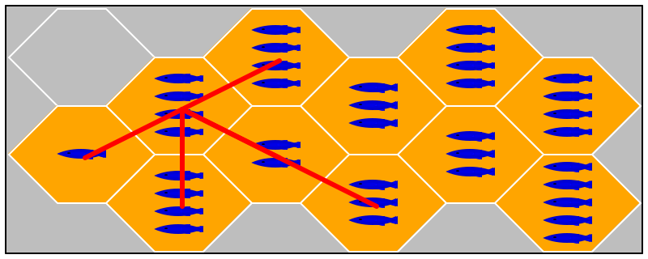
Monday, November 9th, 2020 4:25:31pm
Some of you have expressed unhappiness with the code base you have received. Here is how you may go about switching back to your own code base:
present your respective code base to each other
write a joint memo that explains with five sample project-design decisions why you would prefer to go with the non-assigned code base
formulate a one-sentence, two-line "executive summary" for each design decision and explain it with a justification whose length is up to your choosing
each of you, send a separate email to your instructor one hour before his office hour tomorrow (Tuesday):
use the subject line:
__current code base name__ to __name of old code base__
start the email with the following sentence:
I was not coerced to write this email, and I will accept the
decision that the instructor makes.
attach the memo as a PDF file.
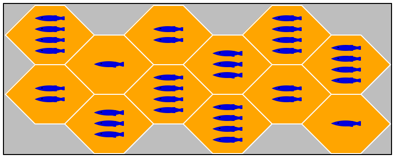
Sunday, November 8th, 2020 10:53:27pm
The actual test fest for 6 —
Download the collected legal tests and work through your failures.
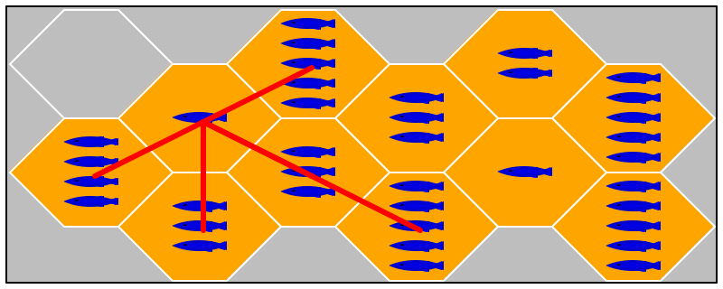
Friday, November 6th, 2020 6:32:37am
ACM is hosting a tech talk on code reviews. Laurie Williams, the first researcher to study pair programming in depth (I have mentioned her in class a couple of times) will interview Michaela Greiler, an industry consultant who specializes in this area. If you have time, you may wish to tune in.
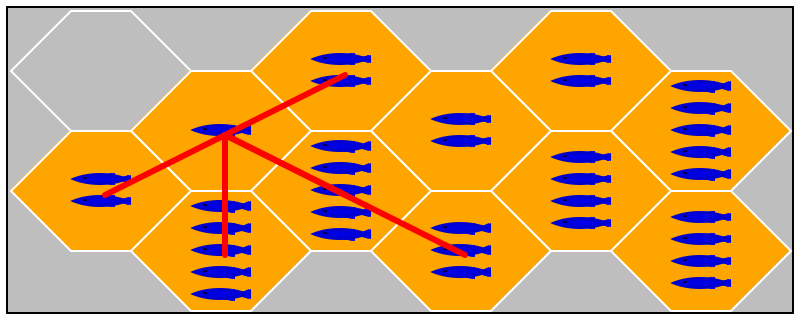
Thursday, November 5th, 2020 12:48:28pm
I have clarified some minor gaps between Fish and Fish.Com, a Plan. These clarifications will not affect your on-going projects, though they may affect the design and implementation of future components.
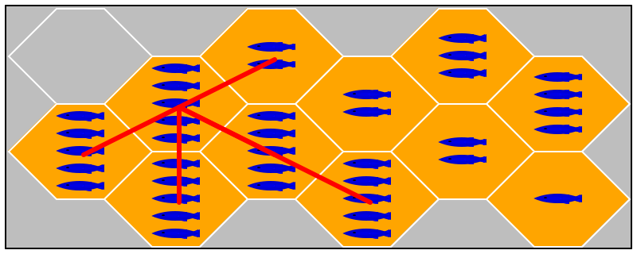
Wednesday, November 4th, 2020 12:36:47pm
Your main contractor has developed integration tests based on the specifications while you, the sub-contractor, worked on the code. Download to make sure the two parties agree on the most basic points of the software.
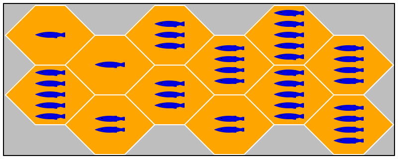
Tuesday, November 3rd, 2020 7:53:58am
The notion of State has been refined for the test cases of 6 —
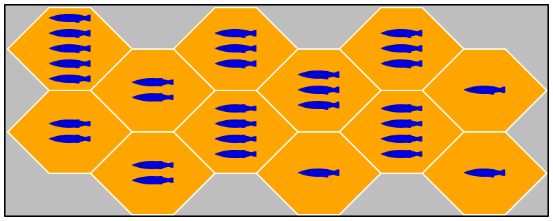
Monday, November 2nd, 2020 8:12:39am
We re-ran the test fest for 5 —
The median for this part of the evaluation is 130 out of 140.
Download the collected legal tests and work through your failures.
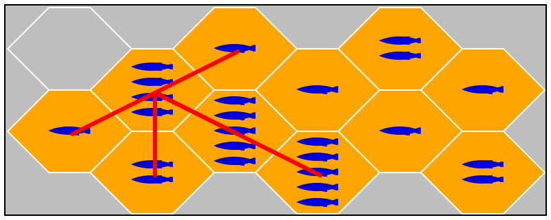
Tuesday, October 27th, 2020 4:03:55pm
5 —
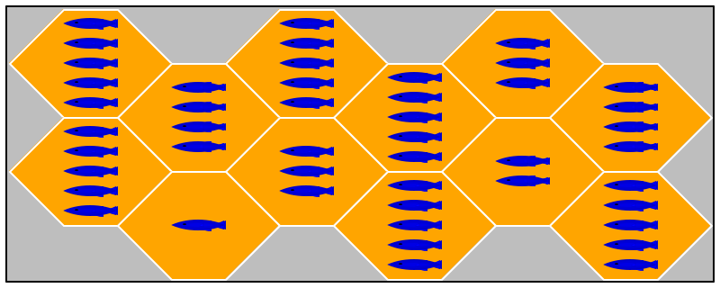
Friday, October 16th, 2020 9:22:42pm
NULL—
A Something is one of: |
-- A ... |
-- B ... |
-- C ... |
interface ISomeThing {} |
|
class A implements ISomeThing {} |
class B implements ISomeThing {} |
class C implements ISomeThing {} |
K. asked about Java’s optional type (in one of the more recent versions of the language). The idea is absolutely the correct one, and it has been around for approximately forever. The realization in the standard took a long time, and the interface is clumsy. Functional languages such as Haskell and Maybe and SML and option have done significantly better. Sadly, Java is often a compromise between what "old" people think programming should be and the designers and specifiers of the language who understand the language design research quite well.
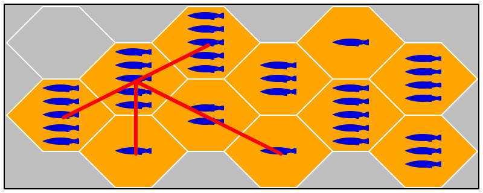
Tuesday, October 27th, 2020 1:40:13pm
An interface I for a component C describes the constructor and method calls so that programmers who create components D and E can incorporated "services" from C. So if I describes a method m’s arguments and results, the creator of D must write down calls to m according to those descriptions. If I contains several methods, say, m, n, and k, it is often the case that they must be called in a certain order or even with a certain number of repetitions, say m must be called before n, and k will be called many times after n.
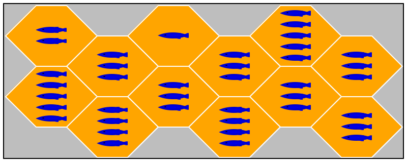
Saturday, October 24th, 2020 7:38:41pm
Jake H. discovered an ambiguity in the test task of 5 —
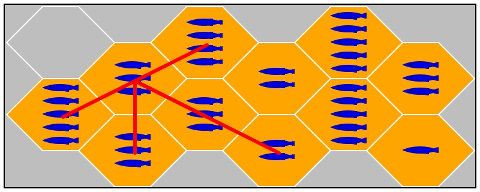
Wednesday, October 21st, 2020 4:26:34pm
Based on observations from my TAs, I have clarified the two "functionality bullets" in 4 —
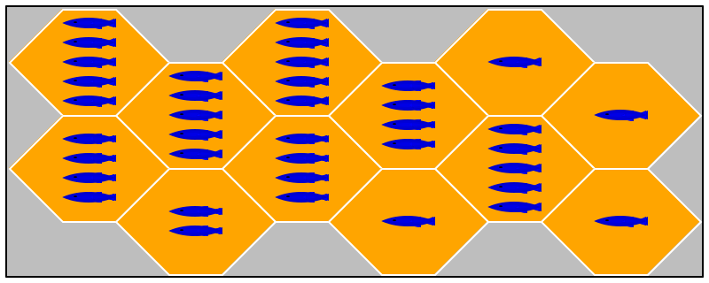
Tuesday, October 20th, 2020 1:18:29pm
See 4 —
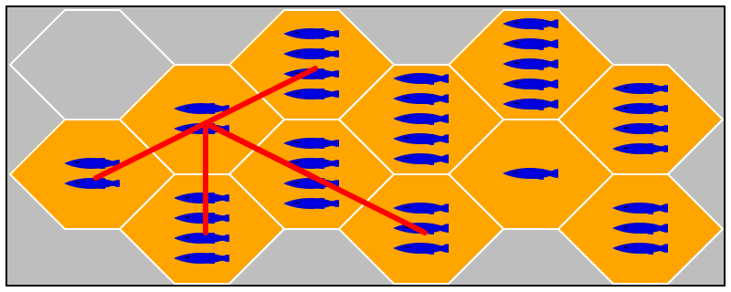
Thursday, October 15th, 2020 5:43:36pm
The following is a script that an experienced Racketeer would write with the principles of Fundamentals I in mind without writing down all pieces.
#! /usr/bin/env racket -tm
#lang racket/base
;; Usage: run
;; ./xcheck PathToSpecification
;; at the top-level of a repo. It checks whether the repo is organized
;; according to the Spec found in PathToSpecification.
#; {type Spec = Symbol u .* u [** Symbol] u [Cons Symbol [Listof Spec]]}
;; Symbol is a name, .* means "any file", [** Symbol] means optional;
;; (S . Spec) is the specification for sub-directory S
(provide main #;{PathString to Specification of required file/dir org})
(require racket/match racket/set racket/format)
(define (main lvl) (check-spec (with-input-from-file lvl read)))
#; {Spec -> Void}
(define (check-spec sp [path "."])
(define-values (must may) (level->set sp))
(check-1-level (member '|.*| sp) must may path)
(define dirs
(for/list ([l sp] #:when (and (pair? l) (set-member? must (~n (car l)))))
l))
(for* ([m dirs][dir (in-value (~n (car m)))])
(when (directory-exists? dir)
(parameterize ((current-directory dir))
(check-spec (cdr m) (~a path "/" dir))))))
#; {Boolean [Setof String] [Setof String] PathString -> Void}
(define (check-1-level any must may P)
(define all (map path->string (directory-list)))
(for ([m must] #:unless (matched? m all)) (displayln `[,m missing at ,P]))
(unless any (extras all (set-union must may) P)))
#; {[Listof String] [Listof String] PathString -> Void}
(define (extras F Pats Path)
(define (match-one f) (for/or ([p Pats]) (matched? p (list f))))
(define xtra (for/list ([f F] #:unless (match-one f)) f))
(when (pair? xtra) (displayln `[,xtra should not exist at ,Path])))
#;{Spec -> (values [Setof String] [Setof String])}
(define (level->set lvl)
(define-values (man opt)
(for/fold ([man '()][opt '()]) ([l lvl])
(match l
[`[** ,k] (values man (cons (~n k) opt))]
[`[,d ,_ ...] (values (cons (~n d) man) opt)]
[_ (values (cons (~n l) man) opt)])))
(values (apply set man) (apply set opt)))
#; {String [Listof String] -> Boolean}
(define (matched? p all) (for/or ([a all]) (regexp-match p a)))
#; {Symbol -> String}
(define (~n s) (cond [(regexp-match "(.*)/" (~a s)) => cadr] [else (~a s)]))
[(** B/)
(** C/)
(** D/)
(** E/)
(Fish/
README.*
[** Makefile]
xtest
(Common/
state.*
.*)
[** Other/]
(Planning/
system.pdf
milestones.pdf
game-state.md
games.md))
(3/
[** Makefile]
xboard
(Tests/
1-in.json 1-out.json
2-in.json 2-out.json
3-in.json 3-out.json)
[** Other/])]
Neither the script nor the spec are the ones we use for checking whether you can follow basic instructions.
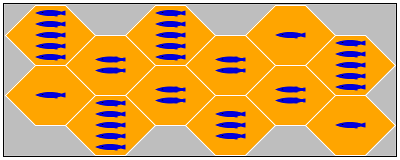
Wednesday, October 14th, 2020 3:55:35pm
Your_Repository/ |
| Fish/ |
| | README... |
| | Makefile ** |
| | xtest |
| | Common/ |
| | | board.PP |
| | | state.PP |
| | otherwise the organization of this directory is left to you |
....... you will have to add more directories and files here ...... |
| | Other/ ** |
| | Planning/ |
| | | system.pdf |
| | | milestones.pdf |
| | | game-state.md |
| | | games.md |
| 3/ |
| | Makefile ** |
| | xboard |
| | Tests/ |
| | Other/ ** |
...... for future assignments you will create additional integration tests |
| 10/ |
| | Makefile ** |
| | x...tbd... |
| | Tests/ |
| | Other/ ** |
If the above diagram conflicts with the prose in the tabs on the left, the prose overrides the diagram.
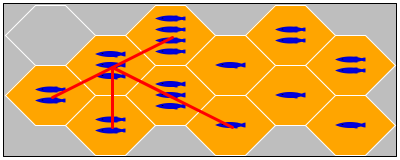
Friday, October 16th, 2020 9:39:55am
Please take a look at a sample game state specification. Yours may differe and get full credit, but this one provodes full guidance and later explanation of the design rationale.
[My implementation deviates from this plan.]
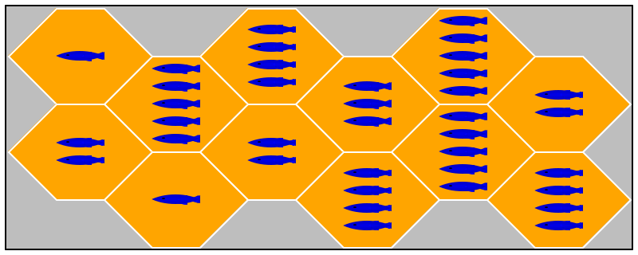
Wednesday, October 14th, 2020 11:20:04am
—
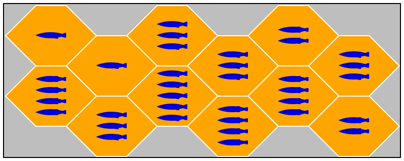
Tuesday, October 13th, 2020 7:56:04pm
3 —
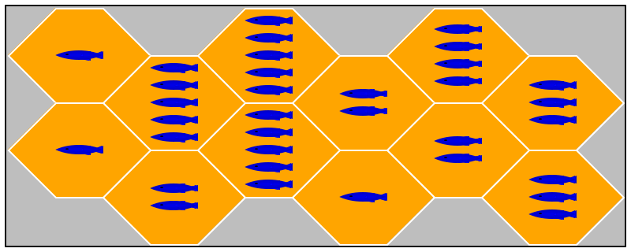
Sunday, October 11th, 2020 1:14:09pm
Important
The testing task for 3 —
I have clarified the testing task and Fish accordingly.
[ Since we are dealing with the board only, there really is no need to figure out where penguins are, which is only a part of the game state. ]
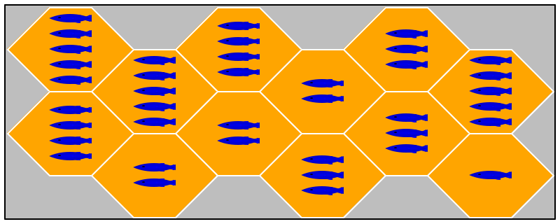
Saturday, October 10th, 2020 11:36:29am
The following piece of advice collects in one place a Piazza post from Friday 09 October.
Once constructed, nobody changes game tiles. A well-chosen data representation makes them immutable. Those of you who have code before and/or have encountered mentally old coders during co-op have questioned and perhaps will continue to question the attribute "immutable" that shows up so often in F I, II, III and here. Ordinarily I give an ad hoc lecture during this week on the person who designed the JAVA API and his book Effective Java by Josh Bloch. If anyone understands JAVA and the intention on how to program with it, it is Josh. His book (the first edition is the most concise and clearly written one) states in indisputable terms: Favor Immutability. While F II was designed independently and before Josh wrote his book, I consider it affirmation of a basic idea that has been overlooked for way too long. (In essence Josh’s book is an apology for making so many parts of the JAVA API mutable.) At this point you may wish to reflect on your attitudes and thinking about F I, II, and III.
Once constructed, nobody changes game avatars (penguins). A well-chosen data representation makes them immutable.
A board consists of a bunch of tiles arranged in a "natural" way (see images). It changes over time. Weigh the advantages of functional updates vs imperative updates.
For this particular game board, planning steps from a tile to neighboring tiles is a key operation. This implies the use of an "direct indexed" data structure choice or a representation that hard-bakes connectivity in a graph-like fashion. The latter choice makes alternative paths across the board (zigzags instead of straight lines) a bit more difficult but may make straight-line calculations easier.
Functionality such as "find a straight line to all positions to which the avatar can move" needs either a data representation for "position" and possibly "straight line" and/or a purpose statement that implicitly introduces and interprets them.
No matter what you do, you need an explanation of representation and interpretation meaning answers to the questions "how do I represent an actual game board (information) in my chosen data representation" and "how do I construct a board from an instance of my chosen data representation."
If you can answer both of these questions, you have a data representation.
If you don’t do this you have "stuff", not accessible pieces of software.
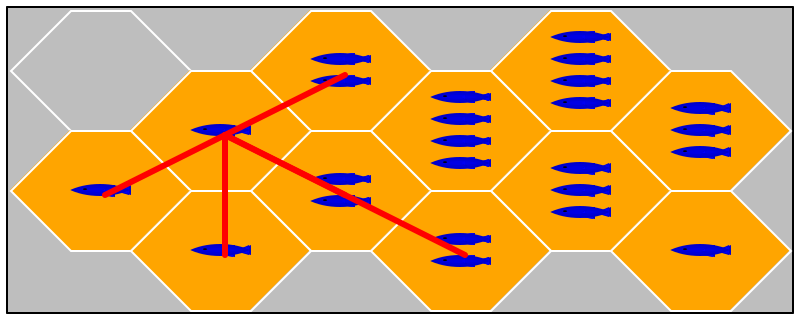
Saturday, October 10th, 2020 8:01:17am
Remember to complete your self evaluation by tonight.
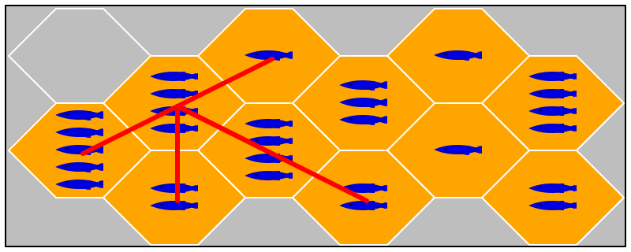
Friday, October 9th, 2020 5:29:45pm
I have clarified the interpretation of the test harness inputs in 3 —
The Game State. Make arrangements to meet your instructor if you wish to discuss how to improve your participation in presentations and panels.
Think of your two or three presentations during the semester as dress rehearsals for the final code walk.
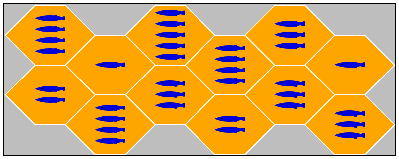
Tuesday, October 6th, 2020 9:04:18am
I have made some adjustments to 2 —
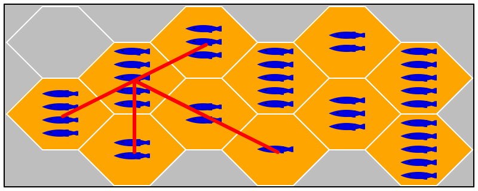
Friday, October 2nd, 2020 5:27:18pm
Sometime in the next hour or so, a file named self-1.md will
appear in your code repository in directory 1/. This is your
first self-evaluation probe of the project. See —
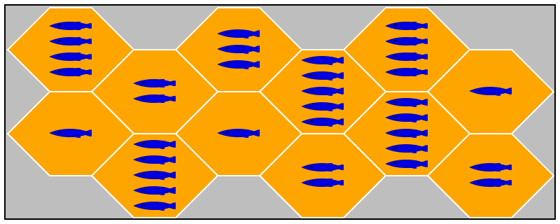
Thursday, October 1st, 2020 9:18:28am
Industrial people are slowly recognizing the downside of ticket-driven software development. Considering reading the Jon Evans’s blog post to get a sense of what these people are getting at. As I said in class on Tuesday, tools are no panecea, but people tend to think of them as such. The effectiveness of tools depends on the users, and in the case of JIRA the project management people: some know how to use it properly and many act like sheep.
Academia cannot and must not teach tools. Our goal has to be to teach thinking instead and create reflective people and software developers.
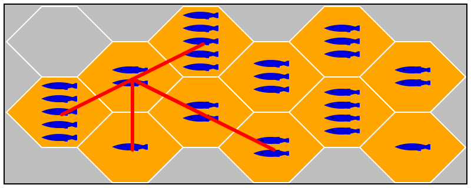
Wednesday, September 30th, 2020 1:39:49pm
We have added a Online Reviews subsection to In-Class Reviews. Please take a look before Friday.
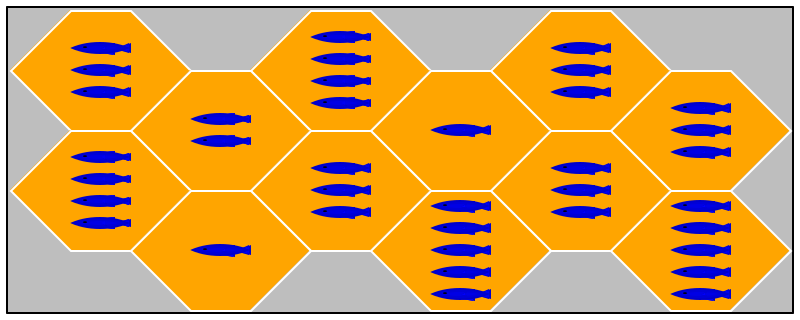
Thursday, September 24th, 2020 9:09:35pm
Send your lab books to the section TA now.
lab book for sw dev |
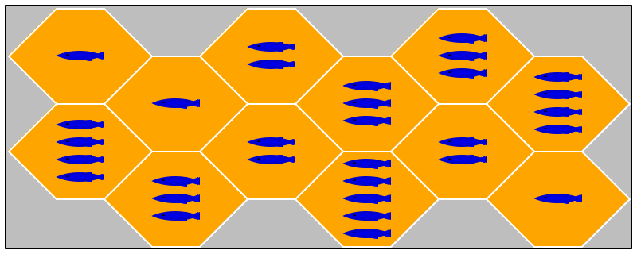
Saturday, September 19th, 2020 4:52:03pm
See Lectures for the videos for next week.
Also re-visit D —
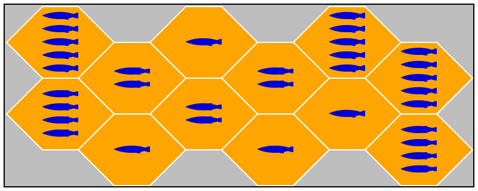
Friday, September 18th, 2020 4:07:23pm
On the lighter side After describing the circular sociology of “there can be only one JSON thing in a json file” or the imminent death of Fortran (see Psychology of Programming), JH in the 09:50am section sent me to
Enjoy. And don’t forget to read the ALT text.

Wednesday, September 16th, 2020 3:44:07pm
As of next Tuesday, we will test-run code walks. We will start with a a set of panelists code walking my solution to one of our assignments, then some of us will play panelists for code walking a pair from the class. Following those two, we will conduct a couple of more trial runs with both presenters and panelists drawn from the class.
the upside is that you get to practice
the downside is that you get feedback in public
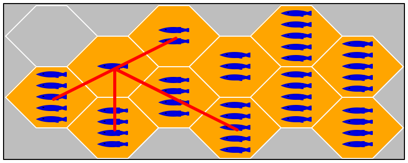
Wednesday, September 16th, 2020 8:21:29am
our test harness does not run make unless there is a Makefile
an executable shell script must start with a #! because it won't run as a subprocess otherwise.
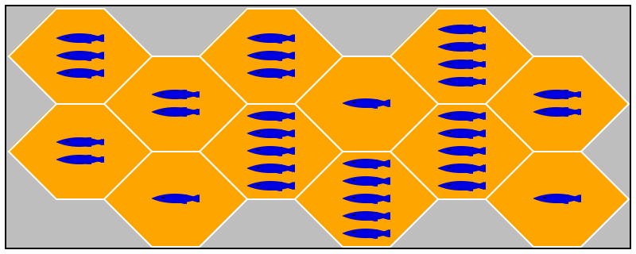
Tuesday, September 15th, 2020 4:55:07pm
See Lectures for the next batch of videos.
The transformation of textual information into internal
data is known as parsing, a technical problem that spawned an
entire research area. Parsing is so complex, it should never be used
in an introductory course but to this day, many such courses assign
programs that read text, analyze it, and react to it—
At first glance, JSON is a simple notation for writing down information in terms of Booleans, Strings, Numbers, arrays of JSON expressions, and objects of JSON expressions. But, as it turns out, turning JSON information into internal data is a minefield; indeed, no two JSON parsers seem to accept the same JSON inputs.
You should keep this fact in mind for your upcoming co-op and future employment.
Finally, if you are interested in recent studies of negative feedback to workers, you may wish to read The Rare Worker Who Thrives on Negative Feedback [PDF].
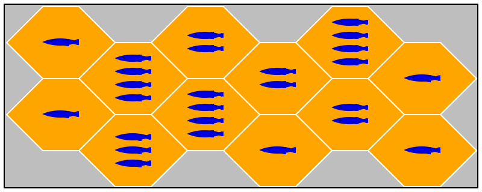
Sunday, September 13th, 2020 3:34:05pm
Lectures lists the videos for lectures past and the next one (or two) coming up. Please take a look at the videos for 09/15.
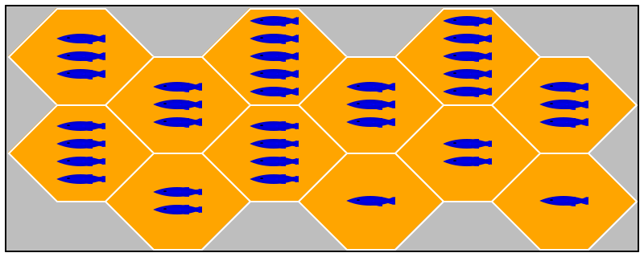
Saturday, September 12th, 2020 12:20:43pm
Contrary to rumors, B —
The actual purpose is two-fold: (1) to get to know your partner with a tiny on-line assignment, and (2) to learn to live up very rudimentary specifications.
Note You were provided with email contacts, and some people may not read their emails on a daily basis, especially not over weekends. So, give your partner until Monday noon to get in touch with you, that is, reply to your first message. This deadline leaves you with 12 hours to finish something that ought to take 30 mins max in total.
If your partner does not reply to your emails by Monday noon, let your instructor know.
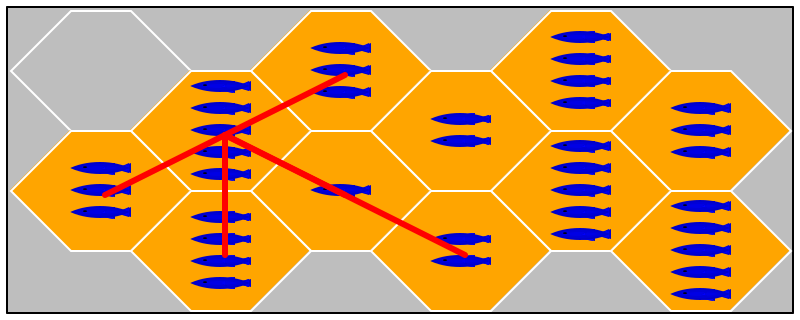
Wednesday, August 5th, 2020 9:46:03am
Welcome to the Fall 2020 issue of Software Development. As always, we aim to deliver a course that teaches you a lot, not in terms of industrial tools and techniques but for your life as a reflective software developer.
this front page serves as a universal announcement scroll,
the Assignments, Actual page serves as your “task list,” and
a few other pages come online as needed.
The College’s web services company caches pages on a too-permanent basis, injecting the occasional miscommunication. The backup site for the course can be found at the personal web page of the lead instructor.
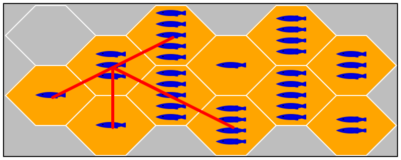